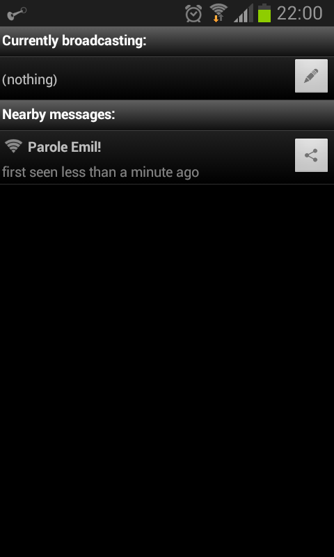
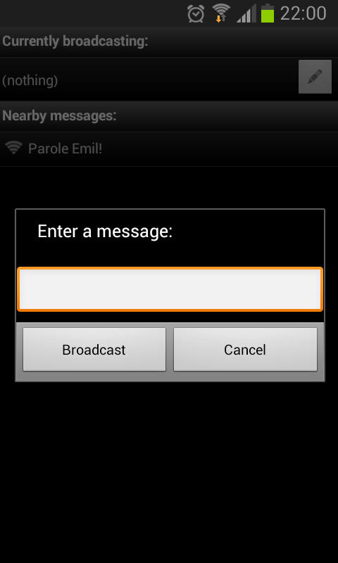
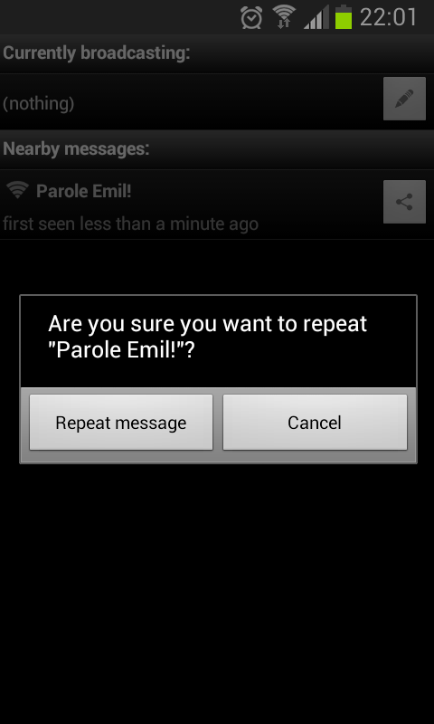

Download
Click here to download the Android App (46 kB). If you prefer to compile things yourself or want to help improve the software, get the source code on GitHub.
Considering the recent confirmations regarding the Orwellian environment Internet-based communication is apparently happening in, it's time to think about alternative ways of communication which do not involve the Internet. With current technology in place, which alternatives are there?
Local, broadcast-style communication
Ahoy! is an App which allows for local, broadcast-style communication using WiFi access point names (more specifically: SSIDs). The App runs in the background, keeps looking for nearby WiFi access points, filters out messages and notifies the user whenever a new message is found. In addition to that, the user may specify a message for broadcasting and the App will take care of setting up a WiFi hotspot with a corresponding SSID representing the message.
While this approach allows for very short messages only – so short, in fact, that it makes Tweets look verbose in comparison – it has a number of interesting properties:
- Communication is inherently local. This means that when you go somewhere, and there's a message in the air, it refers to where you currently are. Relevance is defined by where you are right now, not by who you're following on Twitter, which Facebook groups you're in, or who's in your Google+ Circles.
- Communication is anonymous.
- Messages do not travel accross the Internet, therefore:
- Messages can not be monitored from far away.
- Broadcasting messages is robust towards Internet blackouts.
However, broadcasting can be inhibited locally using a WiFi jammer. - Broadcasting messages is free.
- There are no accounts or personal information.
- Messages are volatile.
- The entire idea is probably non-marketable.
Questions and answers
- How big is the range?
- A normal WiFi adapter can be recognized up to 100 feet (30 meters) away when used outside.
- That's not very far!
-
And that's not a question. However, you can increase the range of a message by
repeating it: click the message and press the button on the right
(
 )
to repeat the message. If the same message is detected several times, the number is
indicated on top of the signal level indicator:
)
to repeat the message. If the same message is detected several times, the number is
indicated on top of the signal level indicator:
- Isn't it a risk having your WiFi hotspot activated all the time while broadcasting a message?
- No, it's not. When you broadcast a message, your WiFi hotspot gets secured with a random key, and the key is changed once per minute.
- Why can't some special characters be entered? What about non-English speaking countries?
- As of today, SSIDs must consist of printable ASCII characters (mostly a-z, A-Z, 0-9 and a couple of special characters). A handful of special characters are not allowed and on top of that, some mobile phones cut off SSIDs after certain characters.
- Is there a version for iPhones and the like?
- No, unfortunately, there's not. And I'm afraid it might not be possible in the near future to create one due to Apple's strict policies.
- Can we see some screenshots?
-   
Technical details
Message encoding
In order to be able to distinguish a message from a legitimate SSID access point name, a message is prepended with a backtick: `. Every SSID starting with a backtick is assumed to be a message.